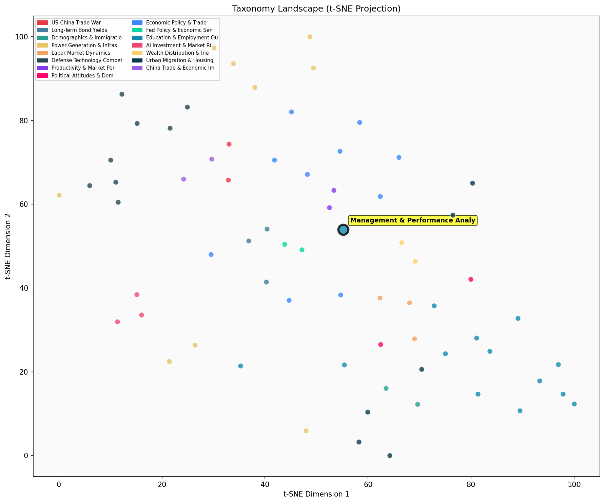

Description
This subcluster examines management effectiveness and performance measurement across corporate and institutional contexts. Articles analyze managerial impact through empirical studies, market data, and organizational surveys, drawing on sources like Census Bureau management assessments, stock market analyses, and longitudinal corporate performance studies. The focus spans CEO selection processes, manager-performance correlations, compensation structures, and market volatility explanations. Unlike its sibling subcluster which centers on educational assessment metrics and student learning outcomes, this subcluster emphasizes workplace management dynamics, executive decision-making, and business performance indicators, connecting managerial quality to broader economic patterns and organizational success metrics.
Similarity to All 70 Subclusters
Each cell represents a subcluster. Color intensity shows similarity (blue=low, red=high). Black line marks current subcluster position.
Relationship to Primary Clusters
Average similarity to each of the 15 primary clusters. Larger area = stronger relationship to that cluster.
Taxonomy Landscape
All 70 subclusters positioned by similarity (t-SNE). Current subcluster highlighted with label. Click to enlarge.
Network Connections
Current subcluster at center, connected to related subclusters. Line thickness = similarity strength.
Most Representative Articles
-
1. Expected earnings for S&P 500 firms “fully explain observed stock market fluctuations from 1980-2022
-
2. Changes in sell-side analysts’ 3-5 year profit expectations of individual S&P 500 firms predict
-
3. Shleifer et al find that “return spreads typically attributed to exotic risk factors are explained b
-
4. The Economist highlights research that suggests high-performing employees who switched to a new firm
-
5. An experiment using repeated random assignments of managers finds that good managers have twice the
Edge Cases (Boundary Articles)
-
1. Walmart is offering store managers bonuses of up to 200% of base salary plus stock grants that allowThis article is borderline because while it mentions management roles and performance-based compensation, it focuses primarily on wage/salary increases and earning potential rather than analyzing management effectiveness or performance measurement methodologies. The content aligns more closely with compensation trends and career progression (wage growth) than with the analytical assessment of managerial performance that defines this cluster.
-
2. Moral self-licensing, a psychological phenomenon where past good deeds allow individuals to engage iThis article is borderline because while moral self-licensing has implications for managerial decision-making and could affect organizational performance, the article appears to focus primarily on the psychological phenomenon itself rather than empirically analyzing management effectiveness or performance measurement in corporate contexts. The content seems more aligned with psychological research methodology and behavioral studies, which explains its higher similarity to the Research Quality & Scientific Reproducibility cluster.
-
3. .@PatrickRuffini argues that Wall Street Journal/NORC recent poll results likely overstate the degreThis article is borderline because while it discusses analyzing survey methodology and data quality (which relates to performance measurement), its primary focus is on polling methodology and political survey results rather than corporate or institutional management effectiveness. The content is more aligned with political polling analysis than management performance evaluation, making it a weak fit for the "Management & Performance Analysis" cluster.
Original Dendrogram